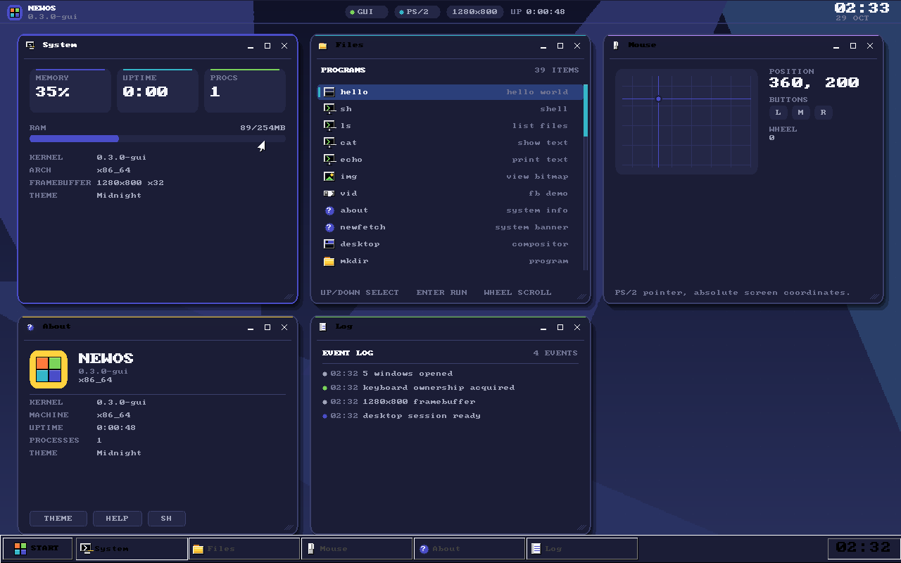
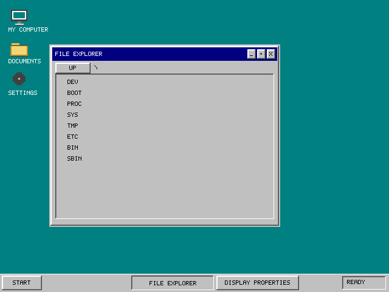
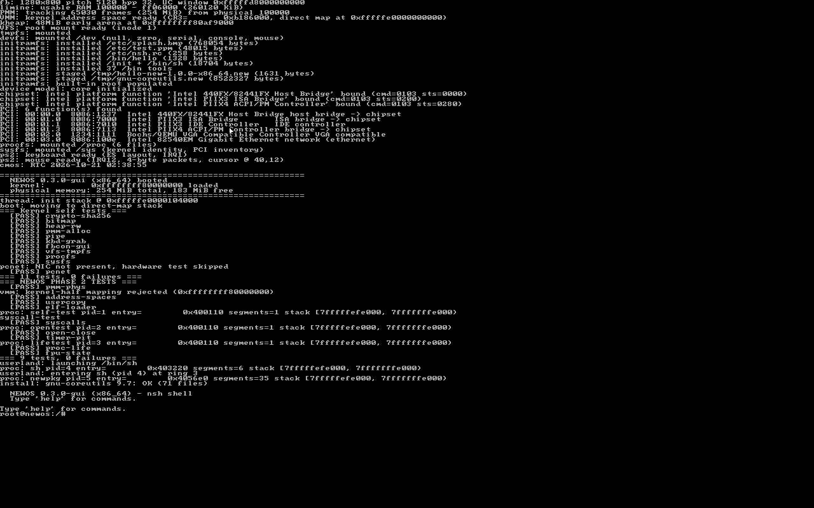
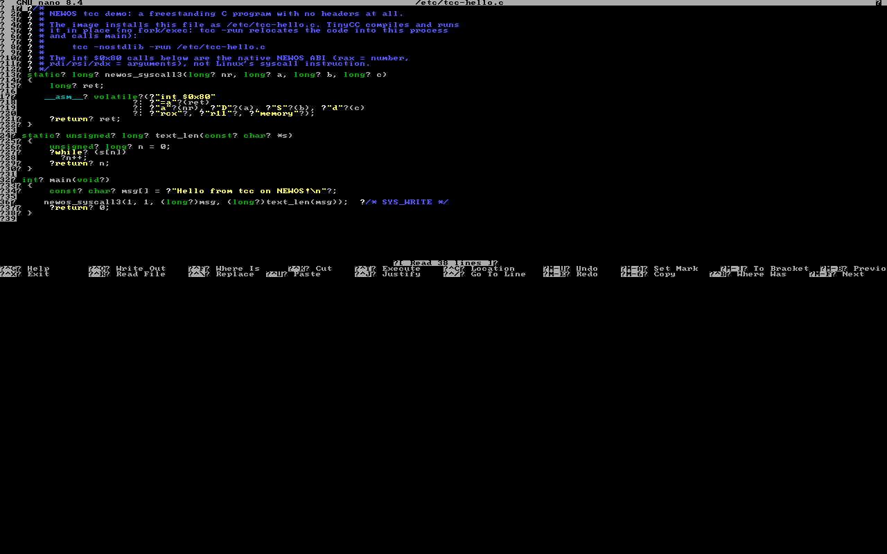
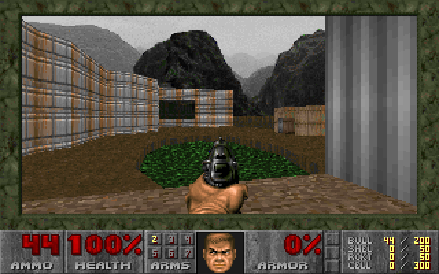

Kernel x86_64
Arranque, gestión de memoria, procesos, sistema de archivos virtual y controladores en desarrollo activo.
Ver arquitectura ↗SISTEMA INDEPENDIENTE · X86_64
NEWOS es un sistema operativo construido desde cero: su kernel, su userland, su shell y las decisiones que los conectan. No es una distribución de Linux.

01 / UNA IDEA, MUCHAS CAPAS
Empieza en el arranque, la memoria, las interfaces y el trabajo cuidadoso que hace posible cada capa. NEWOS explora esas piezas como un proyecto de ingeniería independiente.
02 / ARQUITECTURA
Una estructura explícita y modular, organizada por responsabilidades.
Arranque, gestión de memoria, procesos, sistema de archivos virtual y controladores en desarrollo activo.
Ver arquitectura ↗La sesión gráfica muestra el compositor y las herramientas que existen hoy, sin confundir capturas con promesas.
Ver capturas ↗Shell nsh, utilidades nativas y un flujo de construcción que permite estudiar el sistema capa a capa.
Cómo compilar ↗03 / EN PANTALLA
Capturas existentes del proyecto, tomadas durante ejecuciones en QEMU. No son maquetas publicitarias.




04 / ESTADO ACTUAL
Las validaciones de build y arranque reportadas corresponden al entorno de pruebas QEMU del proyecto. No implican compatibilidad general con hardware físico.
NEWOS · 0.3.0-GUI
Lee el código, sigue el arranque o explora el proyecto en GitHub.